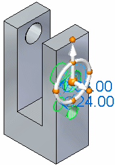
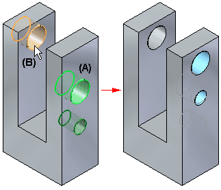

seed element
The primary element in a select set that contains multiple elements. When you select multiple elements individually, the first element you select is considered the seed element. When you fence select a group of elements, the seed element is determined automatically.
When moving elements, the steering wheel or 2D steering wheel is initially positioned on the seed element, but you can move it to another position.

When aligning elements with the Relate command, the seed element (A) is displayed in a different color than the remaining elements in the select set. The seed element is used as the basis for determining how the relationship is applied. For example, when applying a concentric relationship with two cylindrical elements in the select set, the seed element (A) is aligned concentric to the target element (B).
